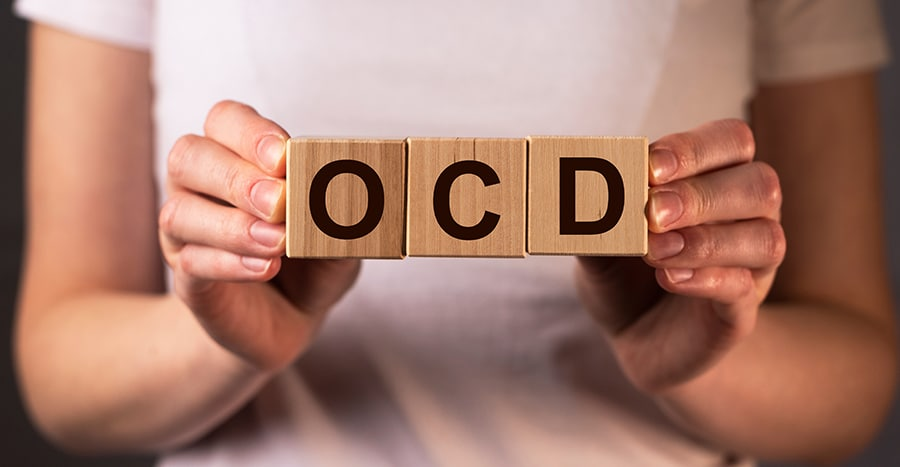

Obsessive-compulsive disorder (OCD) features a pattern of unwanted thoughts and fears
(obsessions) that lead you to do repetitive behaviors. These obsessions and compulsions interfere with
daily activities and cause significant distress.
Obsessive-compulsive disorder (OCD) is a disorder in which people have recurring,
unwanted thoughts, ideas or sensations (obsessions). To get rid of the thoughts, they feel driven to do
something repetitively (compulsions). The repetitive behaviors, such as hand washing/cleaning, checking on
things, and mental acts like (counting) or other activities, can significantly interfere with a person's
daily activities and social interactions.
There are two significant aspects to OCD, Obsession and Compulsion
1) Obsession
Obsessions are recurrent and persistent thoughts, impulses, or images that cause distressing
emotions such as anxiety, fear or disgust. Many people with OCD recognize that these are a product of their
mind and that they are excessive or unreasonable. However, the distress caused by these intrusive thoughts
cannot be resolved by logic or reasoning. Most people with OCD try to ease the distress of the
obsessional thinking, or to undo the perceived threats, by using compulsions. They may also try to
ignore or suppress the obsessions or distract themselves with other activities.

2) Compulsion
Compulsions or compulsive acts can be defined as repetitious, purposeful physical or mental
actions that the individual feels compelled to engage in according to their own strict rules or in a
stereotyped manner.
Who does OCD affect?
OCD can affect anyone. The average age of onset is 19 years. About 50% of people with OCD
begin to have symptoms in childhood and adolescence. It's rare for someone to develop OCD after the age
of 40.
How common is obsessive-compulsive disorder (OCD)?
Obsessive-compulsive disorder is relatively common. It affects 1.6% to 2.3%
of the general U.S. population.